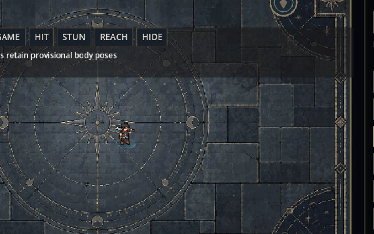
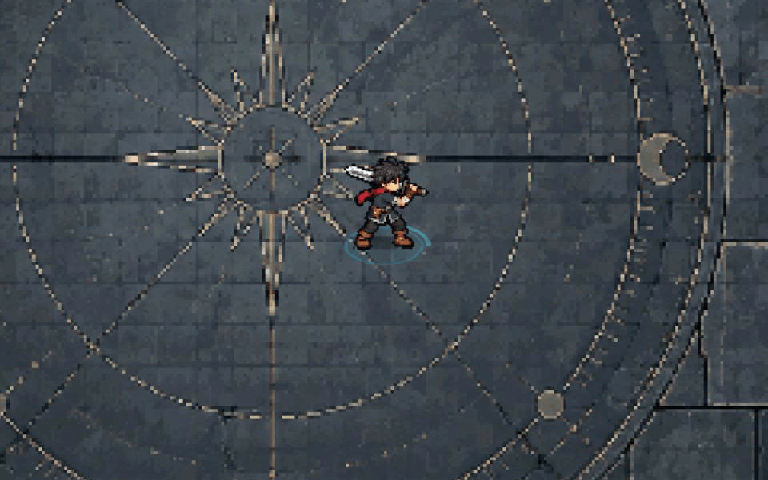

Actual Godot Lab recording. Open F7 → KING REVIEW in a fresh game session. Character size and movement speed retain their existing rules.



The source blade sits below the rear hairline. A one-source-pixel charcoal outline applies consistently to every C body animation. Original comparison restores its previous material.